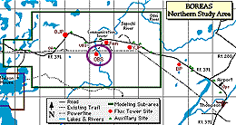
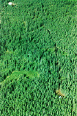
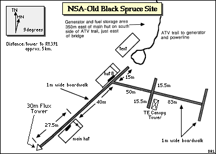
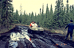
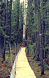
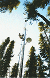
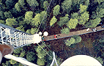
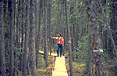

The Old Black Spruce site contained a large 30 meter flux tower and a Terrestrial Ecology (TE) tower that topped out in the canopy of large spruce trees. This allowed researchers to take samples from within the canopy, and to make measurements using the living trees themselves. View an aerial photo-map of the NSA-OBS site.
 Location of the NSA within Canada. |
 Location of the Old Black Spruce site within the NSA. |
|  The NSA-OBS site from the air. This aerial shot of the OBS site shows the generator in the lower-right corner, one of the huts in the upper-left corner, and part of the boardwalk leading away from the hut. |
 Map of the Northern Study Area Old Black Spruce site. |
| NSA Old Black Spruce Flux Tower also called NSA-OBS-FLXTR (click here for detailed info) |
||
| Latitude: 55.88007 | UTM Easting: 532444.5 | BOREAS X: 778.216 |
| Longitude: -98.48139 | UTM Northing: 6192853.4 | BOREAS Y: 613.516 |
| Elevation (ASL): 259 m | UTM Zone: 14 | |
|  The road to the OBS site. The road to the OBS site was often a muddy |  OBS spruce trees and flux tower |
|  The OBS flux tower |  View from the 30 m flux tower, looking down |
|  OBS spruce trees and ground cover | |
Related Pages:
 BOREAS Home
BOREAS Home
 Study Region Overview
Study Region Overview
 Northern Study Area (NSA)
Northern Study Area (NSA)
 NSA Old Black Spruce Site (NSA-OBS)
NSA Old Black Spruce Site (NSA-OBS)
 SSA Old Black Spruce Site (SSA-OBS)
SSA Old Black Spruce Site (SSA-OBS)
Revison Date: January 25, 1999
{kind=link}
{kind=link}
{kind=link}
{kind=link}
{kind=link}
{kind=link}
{kind=link}